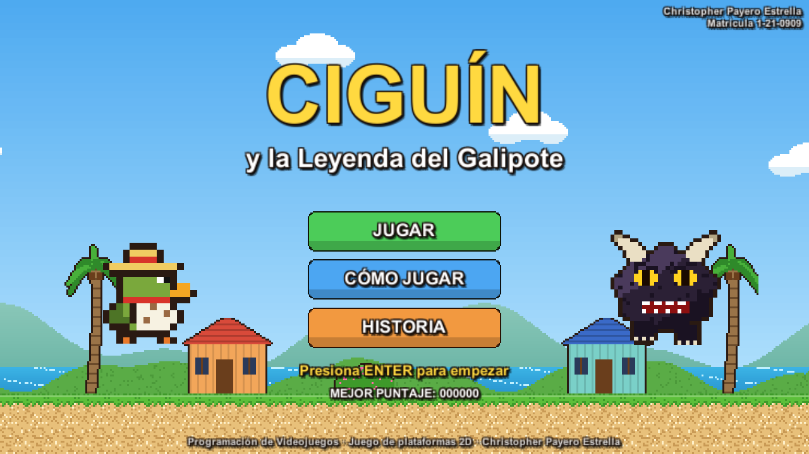
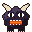
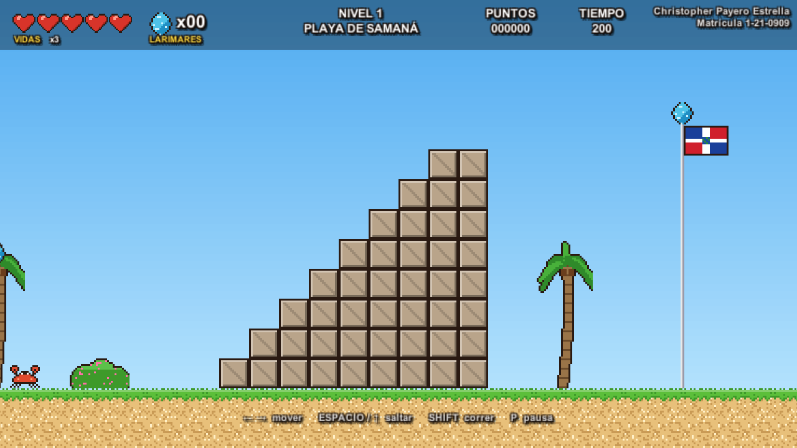
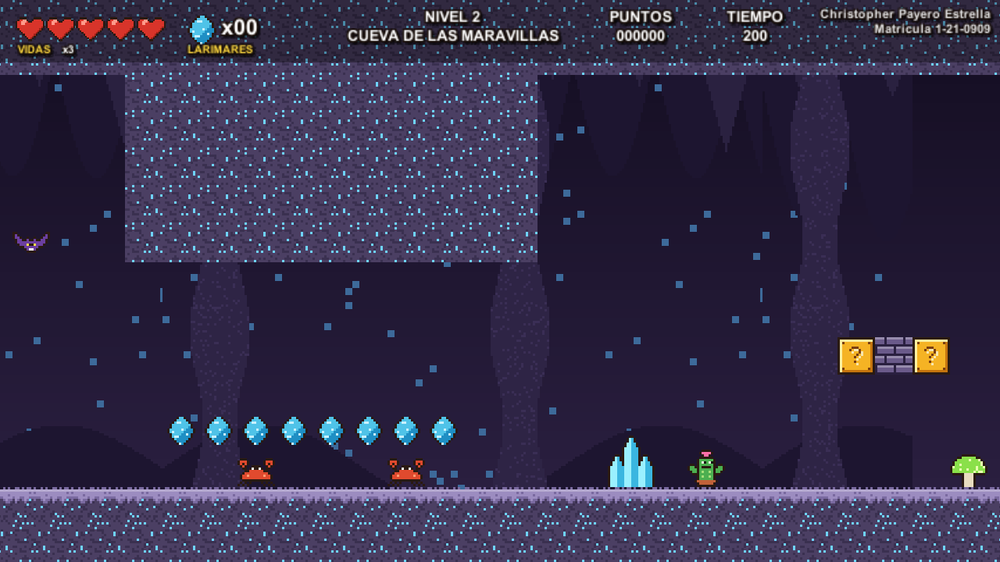
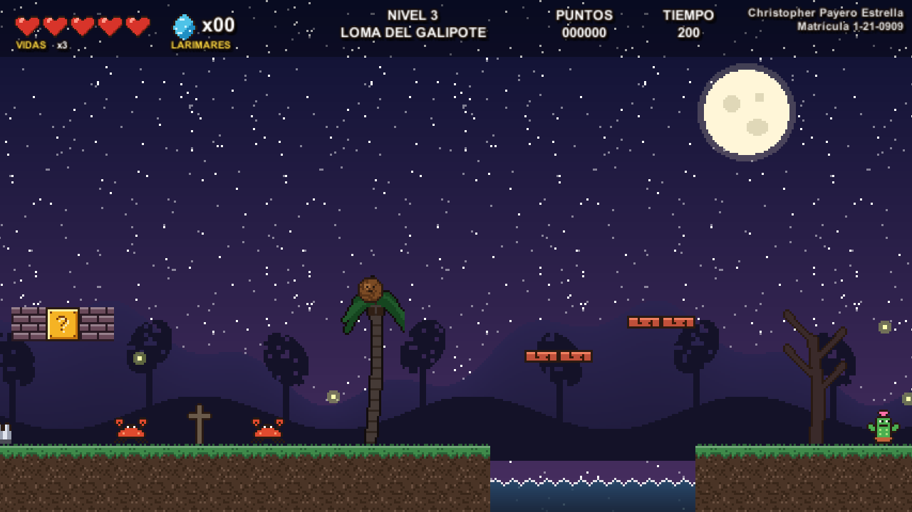
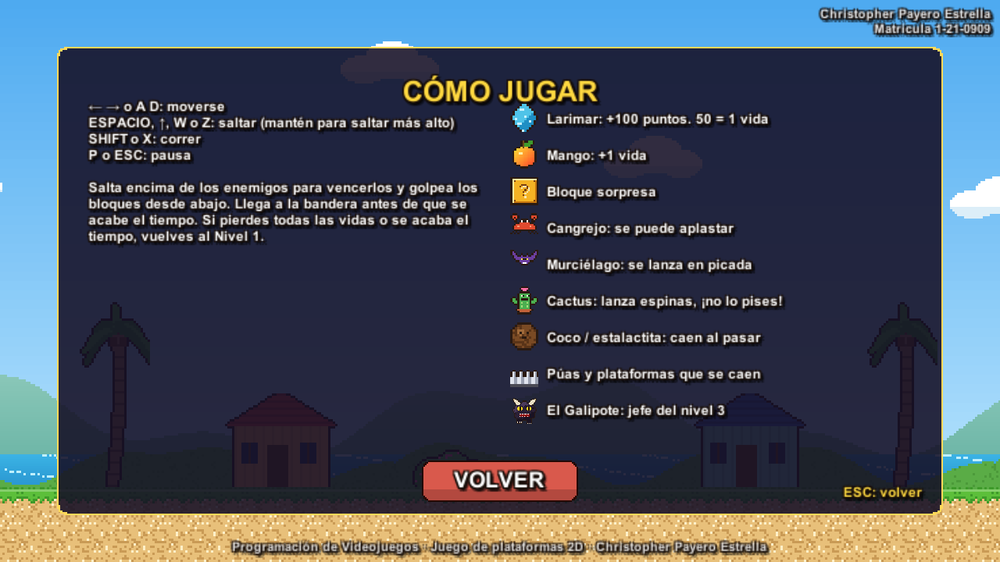
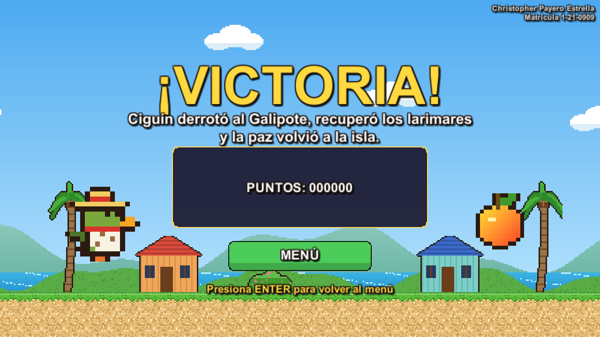

DOCUMENTO DE DISEÑO DEL VIDEOJUEGO
CIGUÍN
y la Leyenda del Galipote

Asignatura: Programación de Videojuegos
Profesor: Iván Mendoza
Alumno: Christopher Payero Estrella · Matrícula: 1-21-0909
Fecha: noviembre de 2026
1. Ficha técnica
| Título | Ciguín y la Leyenda del Galipote |
| Tipo de juego (género) | Plataformas 2D de desplazamiento lateral (estilo Mario): saltar, esquivar, recoger objetos y llegar a la meta antes de que se acabe el tiempo. |
| Clasificación | ESRB E (Todos) / PEGI 7 — violencia caricaturesca leve (saltar sobre enemigos de fantasía), sin sangre, sin lenguaje ofensivo ni compras. |
| Público objetivo | Niños, jóvenes y adultos que disfrutan los plataformas clásicos; partidas cortas de 5 a 10 minutos. |
| Jugadores | 1 jugador |
| Plataforma | Navegador web (WebGL, publicado en GitHub Pages) y Windows. |
| Motor y lenguaje | Unity 6 (6000.6.4f1), C#. Física 2D, sprites en pixel art (16 píxeles = 1 unidad). |
| Estilo visual | Pixel art de 16 bits con paleta tropical; temática dominicana (cigua palmera, larimar, mango, casitas de Samaná, bandera dominicana en la meta). |
| Arte y sonido | Originales: los personajes, enemigos, objetos, escenarios, efectos y las 6 melodías fueron creados para este juego (generados por código en Assets/Editor), por lo que no se repiten en juegos de compañeros. |
| Niveles | 3 niveles + jefe final, menú de inicio y pantalla de victoria. |
2. Historia
En una isla del Caribe vive Ciguín, una pequeña cigua palmera (el ave nacional de la República Dominicana) que nunca se quita su sombrero de guano. La isla es famosa por el larimar, una piedra azul que solo se encuentra allí y que mantiene la alegría de su gente.
Una noche de luna llena aparece el Galipote, el ser del folclor dominicano capaz de cambiar de forma. Se roba todos los larimares y llena la playa, las cuevas y las lomas de criaturas que le obedecen: cangrejos gruñones, murciélagos, cactus que escupen espinas y trampas por todas partes.
Ciguín decide recuperar los larimares. Debe cruzar la Playa de Samaná, atravesar la Cueva de las Maravillas y subir a la Loma del Galipote, donde lo espera el monstruo para la batalla final. Si cae, tendrá que empezar de nuevo desde la playa.
Objetivo del juego
Llegar a la bandera de cada nivel antes de que el tiempo llegue a cero, sin perder todas las vidas, y derrotar al Galipote en el tercer nivel.
3. Personajes
Ciguín (jugador)
Quieto · caminar · caminar · salto · herido · celebrando
Cigua palmera verde oliva con pecho blanco rayado, pico naranja, pañuelo rojo y sombrero de guano. Puede:
- Moverse con aceleración y correr (Shift).
- Saltar: el salto es más alto si se mantiene el botón (salto variable); incluye coyote time y memoria del botón para que se sienta preciso.
- Saltar encima de los enemigos para vencerlos y rebotar.
- Golpear bloques con la cabeza: los bloques sorpresa sueltan larimares o un mango, los ladrillos se rompen y los golpes derriban a los enemigos que estén encima.
Tiene 3 vidas (corazones, máximo 5). Al recibir daño pierde una vida, sale despedido hacia atrás y queda invulnerable un momento (parpadea).
El Galipote (jefe final)



Bestia peluda con cuernos y ojos amarillos, inspirada en la leyenda dominicana del galipote. Tiene 6 puntos de vida y solo recibe daño cuando Ciguín le salta encima. Ataques:
- Salto sísmico: salta hacia Ciguín; al caer tiembla la pantalla y caen piedras del cielo.
- Bolas de fuego: lanza 3 bolas en arco (5 cuando está furioso).
- Embestida: se agacha temblando como aviso y corre hasta chocar con la pared.
- Furia: con la mitad de la vida se vuelve rojizo, más rápido y ataca más seguido.
6. Niveles
Nivel 1 — Playa de Samaná (de día · 200 s)

Inicio: bloques sorpresa, ladrillos y el primer cangrejo

Final: escalera de piedra y la bandera
Nivel de introducción en la playa con palmeras, casitas de colores y el mar al fondo. Enseña a saltar, golpear bloques y pisar cangrejos. Aparecen los cocos que caen, púas, el primer cactus, una plataforma móvil sobre el mar, plataformas que se caen, murciélagos y un punto de control a la mitad. Música: merengue alegre.
Nivel 2 — Cueva de las Maravillas (subterráneo · 200 s)

Cristales, agua subterránea y estalactitas

Pasillo de techo bajo con cangrejos
Cueva oscura con techo, cristales azules y hongos brillantes. Más murciélagos, estalactitas que caen, un pasillo de techo bajo, hileras de ladrillos y hoyos con plataformas móviles y plataformas que se caen. Música misteriosa con eco.
Nivel 3 — Loma del Galipote (de noche · 240 s · jefe)

La loma de noche, con luciérnagas

Arena del jefe: el Galipote
Noche de luna llena con árboles secos y luciérnagas. Primero hay un tramo con todos los enemigos y dos mangos para llegar con más vidas. Al entrar en la arena se cierra una pared detrás de Ciguín, la pantalla tiembla, el Galipote ruge, aparece su barra de vida y cambia la música a la del jefe. Al derrotarlo se pasa a la pantalla de victoria.
Reglas de progreso
| Situación | Resultado |
|---|
| Completar el nivel 1 | Pasa al nivel 2 |
| Completar el nivel 2 | Pasa al nivel 3 (jefe) |
| Derrotar al Galipote | Pantalla de victoria con puntaje y récord |
| Recibir daño o caer al vacío | Pierde 1 vida (si cae, reaparece en el punto de control) |
| Quedarse sin vidas (en cualquier nivel) | Mensaje "¡CIGUÍN HA MUERTO!" con el motivo y vuelve al nivel 1 |
| Se acaba el tiempo sin completar el nivel | Mensaje de muerte y vuelve al nivel 1 |
Puntuación
| Acción | Puntos |
|---|
| Larimar | 100 |
| Cangrejo / murciélago | 200 / 300 |
| Romper ladrillo | 50 |
| Mango | 1000 |
| Bandera | 400 a 5000 según la altura |
| Tiempo sobrante | 10 por segundo |
| Derrotar al Galipote | 5000 |
7. Escenas
Menu
→
Nivel1
Playa
→
Nivel2
Cueva
→
Nivel3
Loma + jefe
→
Victoria
Si Ciguín muere (sin vidas o sin tiempo) en cualquier nivel → mensaje de muerte → Nivel1. Desde la pausa (P) se puede volver al Menú con M.
| Escena | Contenido |
|---|
| Menu | Título, Ciguín y el Galipote animados, botones Jugar, Cómo jugar (controles, objetos y enemigos con dibujos) e Historia; mejor puntaje guardado; música del menú. |
| Nivel1, Nivel2, Nivel3 | HUD con corazones, larimares, nombre del nivel, puntos, tiempo, nombre y matrícula; mensajes centrales; pausa; barra de vida del jefe en el nivel 3. |
| Victoria | Mensaje final, puntos, vidas restantes y récord; música de victoria; vuelve al menú. |

Menú: Cómo jugar

Pantalla de victoria
8. Guion
Escena 1 — Menú. Suena una melodía alegre. Ciguín camina a la izquierda y el Galipote sonríe a la derecha. En Historia se cuenta cómo el Galipote robó los larimares.
Escena 2 — Playa de Samaná. Aparece "NIVEL 1 · PLAYA DE SAMANÁ". Ciguín llega a la playa: las casitas están vacías y los cangrejos del Galipote vigilan la arena. Entre palmeras y bloques encuentra los primeros larimares. Cruza el mar en una tabla que flota y llega a la bandera dominicana.
Escena 3 — Cueva de las Maravillas. La música se vuelve misteriosa y con eco. En la oscuridad brillan cristales y hongos; los murciélagos atacan desde el techo y las estalactitas se desprenden. Ciguín pasa por un túnel estrecho y sale por la escalera del fondo.
Escena 4 — Loma del Galipote. Es de noche y hay luna llena. Las luciérnagas iluminan el camino. Al llegar a la cima, una pared de piedra se cierra a sus espaldas, la tierra tiembla y el Galipote ruge: "¡EL GALIPOTE! Sáltale encima para hacerle daño". Cambia la música. Cuando le quedan pocas fuerzas el Galipote se enfurece.
Escena 5 — Victoria. "¡DERROTASTE AL GALIPOTE!". Ciguín celebra: recuperó los larimares y la paz volvió a la isla. Se muestran los puntos y el récord.
Si Ciguín muere. La música se corta, suena una melodía triste y aparece "¡CIGUÍN HA MUERTO!" con el motivo (por ejemplo "Un cangrejo pellizcó a Ciguín" o "¡Se acabó el tiempo!"). Luego vuelve al Nivel 1 con 3 vidas.
9. Controles
| Acción | Teclas |
|---|
| Moverse | ← → o A D |
| Saltar (mantener para saltar más alto) | Espacio, ↑, W o Z |
| Correr | Shift o X |
| Pausa / continuar | P o Esc (en pausa, M vuelve al menú) |
| Menús | Enter o el ratón |
10. Sonido y música
Toda la música y los efectos son originales, sintetizados al estilo chiptune (onda cuadrada para la melodía, triangular para el bajo, ruido para la percusión).
| Música | Dónde suena |
|---|
| Tema del menú (Do mayor, 118 bpm) | Menú de inicio |
| Merengue de la playa (Sol mayor, 150 bpm, con güira) | Nivel 1 |
| Cueva (La menor, 104 bpm, con eco) | Nivel 2 |
| Noche en la loma (Re menor, 128 bpm) | Nivel 3 |
| Tema del jefe (Mi menor, 168 bpm) — distinta | Al entrar a la arena del Galipote |
| Victoria (fanfarria) | Pantalla final |
Efectos (20): salto, larimar, aplastar, daño, golpe de bloque, romper ladrillo, aparece objeto, mango, vida extra, disparo de espina, bola de fuego, golpe al jefe, rugido, temblor, caída, punto de control, pausa, botón, muerte y nivel completado.
11. Estructura técnica
| Script | Función |
|---|
Juego | Datos que pasan de una escena a otra (vidas, larimares, puntos, récord) y el audio. |
Nivel | Tiempo límite, HUD, puntos de control, muerte, nivel completado, pausa y jefe. |
Jugador / Entrada | Movimiento, salto variable, pisotón, golpe de bloques y animación por sprites. |
Enemigo (base) | Cangrejo, Murcielago, CactusLanzador, Jefe; ZonaGolpe distingue pisotón y daño. |
Peligro, Proyectil, ObjetoQueCae | Púas, espinas, bolas de fuego, piedras, cocos y estalactitas. |
Bloque, Larimar, Mango | Objetos y bloques. |
PlataformaMovil, PlataformaQueCae, Meta, PuntoControl, ZonaJefe | Elementos del escenario. |
CamaraSeguir, Parallax | Cámara con límites y sacudida; fondos con profundidad. |
Editor/ConstructorProyecto | Genera sprites, sonidos, prefabs y las 5 escenas (menú Ciguin → Construir todo). |
Editor/PruebaAutomatica | Prueba en modo Play que recorre el juego y verifica cada requisito (34 comprobaciones, todas correctas). |
12. Enlaces